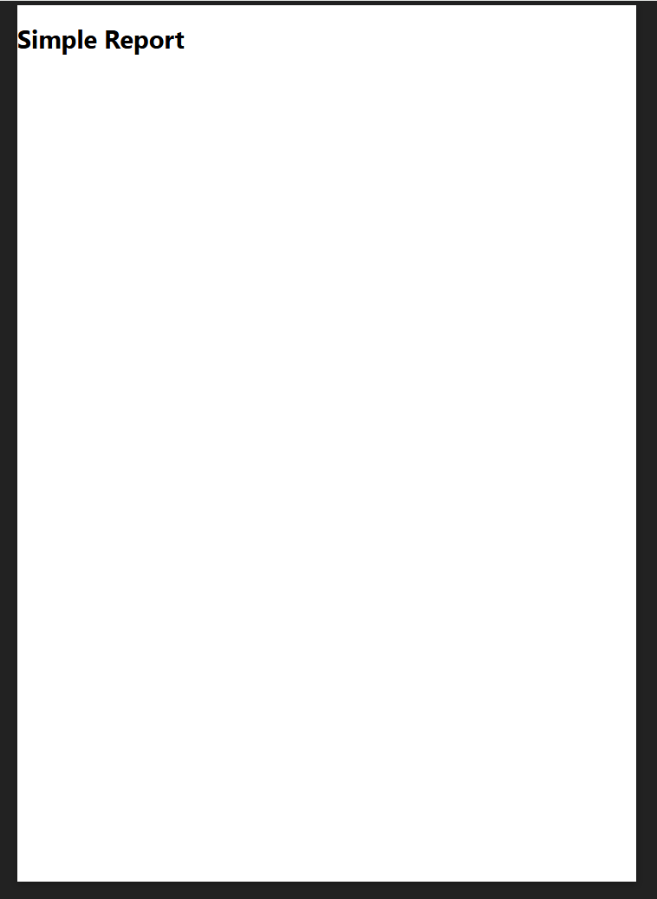
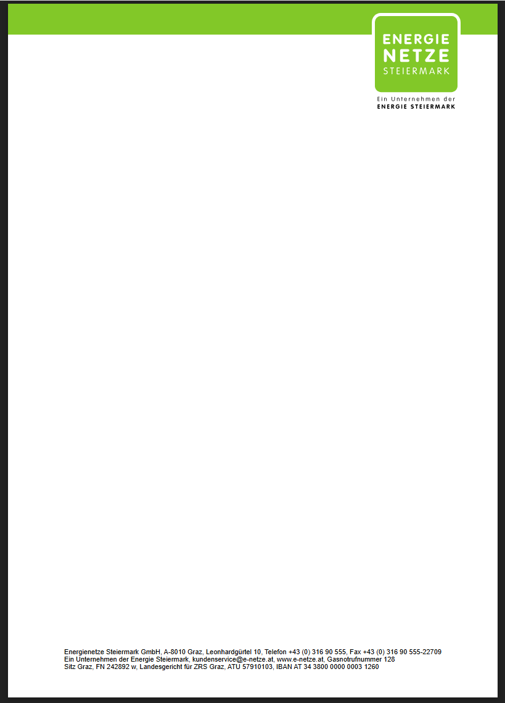
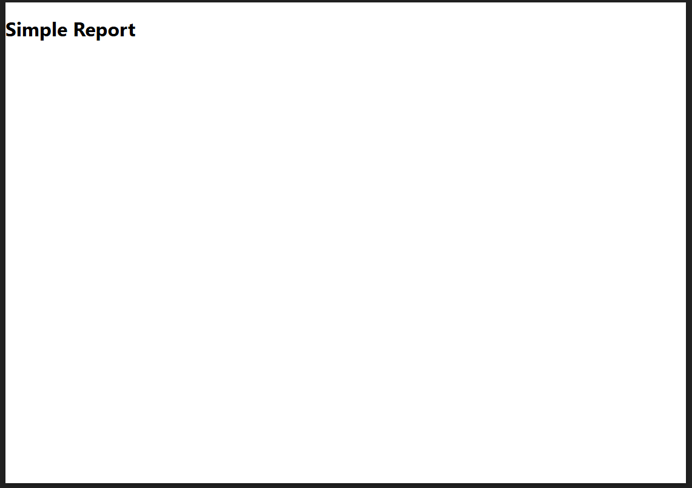
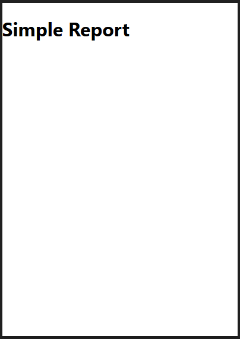
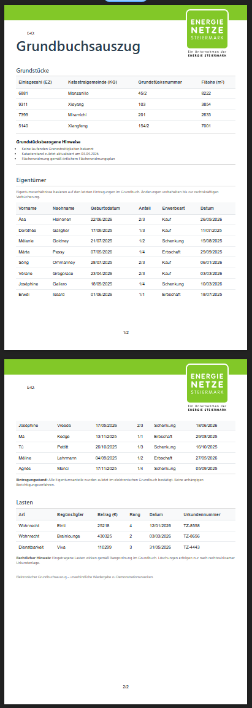

PDF Reporting in DataLinq¶
Mit dem PDF Reporting in DataLinq können wiederverwendbare Report-Templates erstellt werden, die parametrisiert aufgerufen und als PDF gerendert werden. Typische Anwendungsfälle sind unter anderem:
Rechnungen
Briefe
Infoblätter
projektspezifische Auswertungen
Funktionsumfang¶
PDF-Templates können beim Aufruf mit Parametern befüllt werden. Dadurch lassen sich Inhalte dynamisch je Datensatz, Benutzerkontext oder Prozessschritt erzeugen.
Optional können Reports zusätzlich über Benutzereingaben ergänzt werden, beispielsweise über Eingabefelder für:
Name
Datum
weitere fachliche Parameter
Die erzeugten PDF-Dokumente stehen direkt im Browser zum Download bereit. Der Download kann entweder:
aus der View des PDF-Templates selbst erfolgen, oder
aus einer anderen View über Helper ausgelöst werden.
Erstellung von PDF-Templates¶
Die Erstellung erfolgt wie bei anderen DataLinq-Views im DataLinq Code Editor. Dabei können folgende Technologien kombiniert werden:
HTML
CSS
JavaScript
Razor
spezielle @PDF-Helper für das PDF Reporting
So lassen sich Layout, Datenbindung und Ausgabeformat flexibel steuern, von einfachen Standarddokumenten bis hin zu komplexen, dynamischen Berichten.
Aktivierung des PDF Reporting Modes¶
Um ein PDF-Template zu erstellen, wird zuerst eine neue View angelegt. Anschließend kann in den Einstellungen der View unter PDF Reporting mode die gewünschte Betriebsart aktiviert werden.

Im Bereich PDF Reporting mode stehen drei Checkboxen zur Verfügung:
View report mode
Aktiviert den PDF-Report-Modus für die aktuelle View. Die View wird damit als PDF-Report behandelt.
Browser Compatibility Notice
Zeigt Benutzern beim Aufruf einen Hinweis an, dass für ein optimales Rendering ein aktueller Browser verwendet werden soll. Der Hinweis muss vom Benutzer bestätigt werden.
Report editing mode
Aktiviert den Bearbeitungsmodus für Reports. Damit können Administratoren zusätzlich zum DataLinq-Markup-Code Elemente per Drag and Drop positionieren. Detaillierte Informationen dazu folgen in einem weiteren Kapitel.
Erstellung eines PDF-Templates¶
Um einen Report mit einer oder mehreren Seiten zu erstellen, werden die vorgefertigten @PDF-Helper verwendet.
Zusätzliche Unterstützung zur Anwendung der Helper finden Sie in:
der DataLinq-Hilfe
der DataLinq-Sandbox
Ein einfacher Report mit genau einer Seite und ohne weitere Zusatzfunktionen kann wie folgt erstellt werden:
@PDF.BeginReport()
@PDF.NewPage()
<h1>Simple Report</h1>
@PDF.EndPage()
@PDF.EndReport()
In diesem Beispiel wird zunächst ein Report gestartet und anschließend eine Seite mit einer Überschrift eingefügt.

Erklaerung der @PDF-Helper-Funktionen¶
@PDF.BeginReport()¶
Der Helper @PDF.BeginReport() markiert den Beginn eines Reports.
Folgende Parameter stehen zur Verfuegung:
pageNumberOptions:Einstellungen fuer die automatische Seitennummerierung. Damit kann festgelegt werden:
ob Seitennummern verwendet werden,
die Position (links, mittig, rechts),
die Art der Darstellung (z. B.
1oder1/X),wie viele Seiten zu Beginn uebersprungen werden sollen (z. B. fuer ein Deckblatt).
Beispiel:
pageNumberOptions: new Dictionary<string, object>() { {"UsePageNumbers", true}, {"Position", 1}, {"Type", 0}, {"SkipPages", 0} }
quality:Gibt die Ausgabequalitaet fuer den Download an. Moegliche Werte sind:
PdfQuality.Preview,PdfQuality.Low,PdfQuality.Medium,PdfQuality.High,PdfQuality.Best.
download_button:bool-Wert, der steuert, ob in der Template-View direkt ein Download-Button fuer den Benutzer angezeigt wird.
fileName:Dateiname der heruntergeladenen PDF-Datei. Standardwert ist
dataLinqPdfReport.pdf.
Komplettes Beispiel:
@DLH.BeginPdfReport(pageNumberOptions: new Dictionary<string, object>(){ {"UsePageNumbers", true}, {"Position", 3}, {"Type", 0}, {"SkipPages", 0}}, download_button:true, fileName: $"Example_{@Guid.NewGuid().ToString()}", quality: PdfQuality.Medium )
@PDF.NewPage()¶
Der Helper @PDF.NewPage() wird verwendet, um eine neue Seite zu beginnen.
Folgende Parameter stehen zur Verfuegung:
pageTemplateOptions:Kann verwendet werden, wenn eine Seite zusaetzlich zum eigenen Content auf ein bestehendes Template zugreifen soll. Ein typischer Anwendungsfall ist ein zentrales Corporate-Design-Template mit Kopf- und Fusszeile, das auf allen Seiten wiederverwendet wird. Dadurch muss der gemeinsame Rahmen nicht auf jeder Seite erneut definiert werden.
Beispiel:
pageTemplateOptions: new Dictionary<string, object>() { {"UsePageTemplate", true}, {"TemplateId", "datalinq-guide@pdf@pdf-template"} }
UsePageTemplate(bool): Aktiviert die Verwendung eines Templates.TemplateId: DataLinq-ID der zu verwendenden Template-View.
Bemerkung
Bei Templates (z. B. Kopf- und Fusszeilen) sollten die enthaltenen Elemente immer absolut positioniert werden. Andernfalls koennen sich die Template-Elemente verschieben, sobald in der Seite zusaetzlicher Content eingefuegt wird.
Beispiel:
<h1 style="position: absolute; top:150px; left:150px;"></h1>

landscape:truedreht die Seite ins Querformat. Standard istfalse(Hochformat/Portrait).

paperSize:Legt die Seitengroesse ueber das
PaperSize-Enum fest. Standard istA4. Moeglich sindA1bisA6. Die Papiergroessen koennen mitlandscapekombiniert werden und innerhalb eines Reports gemischt eingesetzt werden.

dynamicTableOptions:Wird verwendet, um Inhalte aus Tabellen und flachen Hierarchien automatisch auf mehrere Seiten aufzuteilen, wenn der Platz auf der aktuellen Seite aufgrund dynamischer Tabelleninhalte nicht ausreicht.
Beispiel:
dynamicTableOptions: new Dictionary<string, object>() { {"Dynamic", true}, {"DynamicUseTemplate", true}, {"DefaultMarginTop", 220}, {"DefaultMarginBottom", 110}, {"RepeatHeader", true} }
Dynamic(bool): Aktiviert die dynamische Seitenteilung.DynamicUseTemplate(bool): Legt fest, ob bei dynamisch erzeugten Seiten ebenfalls ein Template verwendet wird.DefaultMarginTop(int): Standardabstand oben fuer neu erzeugte Seiten, z. B. fuer Kopfbereiche aus dem Template.Dieser Wert wirkt nur fuer zusaetzlich generierte Seiten. Falls auf der ersten Seite ein oberer Mindestabstand benoetigt wird, kann dies mit
<div style="height:XYZ px"></div>umgesetzt werden.
DefaultMarginBottom(int): Mindestabstand unten, z. B. fuer Fussbereiche; wirkt auch auf der ersten Seite.RepeatHeader(bool, Standardtrue): Wenn auffalsegesetzt, wird bei gesplitteten Tabellen auf Folgeseiten die Tabellenkopfzeile nicht wiederholt.

Hinweise zum Auto-Splitting¶
Beim Auto-Splitting werden Tabelleninhalte automatisch auf Folgeseiten verteilt, wenn der Platz auf einer Seite nicht ausreicht.
Wichtig fuer die Struktur:
Tabellen, die automatisch gesplittet werden sollen, duerfen nicht in anderen Containern verschachtelt sein (zum Beispiel in einem
div).Diese Regel gilt auch fuer Tabellen, die ueber
@DLH.IncludeVieweingebunden werden.Beim Splitting werden ausschliesslich die Zeilen (Rows) einer Tabelle aufgeteilt.
Alle anderen HTML-Elemente werden als flache Hierarchie behandelt und nicht in Teilbereiche zerlegt.
Das bedeutet: Elemente wie div, h1 oder p werden immer als Ganzes betrachtet.
Wenn ein solches Element nicht mehr vollstaendig auf die aktuelle Seite passt, wird es als gesamter Block auf der naechsten Seite positioniert.
@PDF.EndPage()¶
Der Helper @PDF.EndPage() markiert das Ende einer PDF-Report-Seite.
Alles, was zwischen @PDF.NewPage() und @PDF.EndPage() definiert ist, wird auf dieser Seite gerendert.
Der Helper besitzt keine weiteren Parameter.
@PDF.EndReport()¶
Der Helper @PDF.EndReport() markiert das Ende des PDF-Reports.
Der Helper besitzt keine weiteren Parameter.
@PDF.NewDraggable() / @PDF.EndDraggable()¶
Die beiden Helper muessen immer in Kombination verwendet werden:
@PDF.NewDraggable(...)oeffnet den verschiebbaren Bereich.@PDF.EndDraggable()schliesst den verschiebbaren Bereich.
Der Inhalt zwischen diesen beiden Helpern wird als zusammenhaengendes Element behandelt und kann per Drag and Drop verschoben werden, wenn in den View-Einstellungen der PDF Editing Mode aktiviert ist.
Parameter von @PDF.NewDraggable(...):
x: X-Position des Elements.y: Y-Position des Elements.
Hinweise zur Verwendung:
Per Rechtsklick auf das verschiebbare Element werden die aktuellen
x- undy-Werte in die Zwischenablage kopiert.- Der Einsatz wird nur auf fixen Seiten empfohlen, also ohne Auto-Splitting.
Bei dynamisch gesplitteten Seiten kann sich die Positionierung sonst unvorhersehbar verhalten.
Auf einer PDF-Seite kann mit
Strg+Mein Grid mit Mittellinien ein- und ausgeblendet werden.Wird waehrend des Verschiebens eines Elements
Strggedrueckt gehalten, kann auf die Mittellinien gesnappt werden.Sind die Mittellinien deaktiviert (
Strg+M), koennen Elemente stattdessen an anderen Elementen einrasten (Snapping).